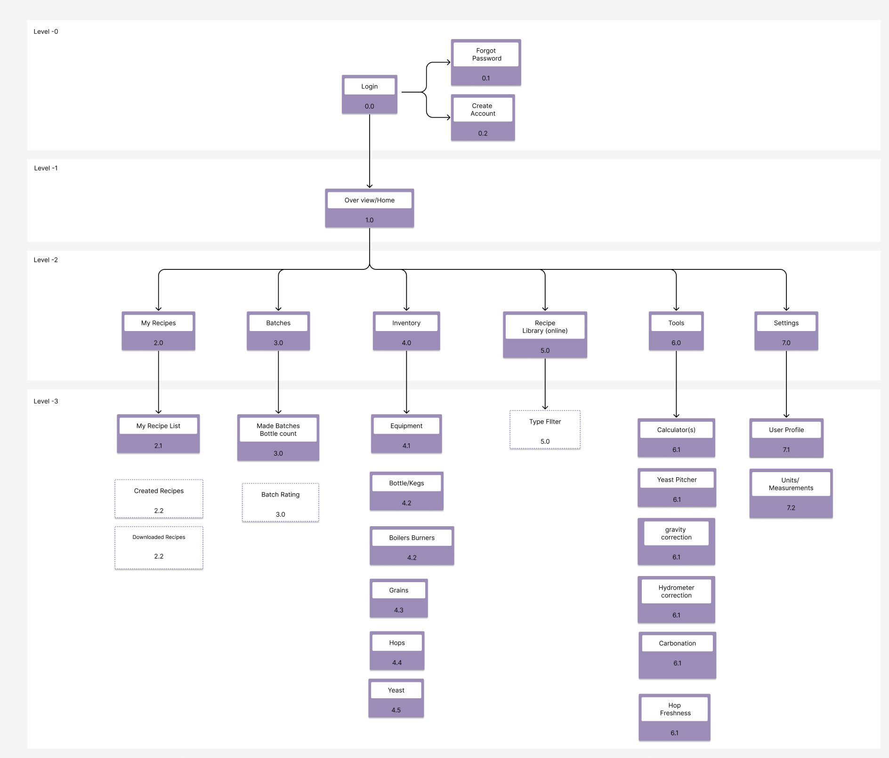
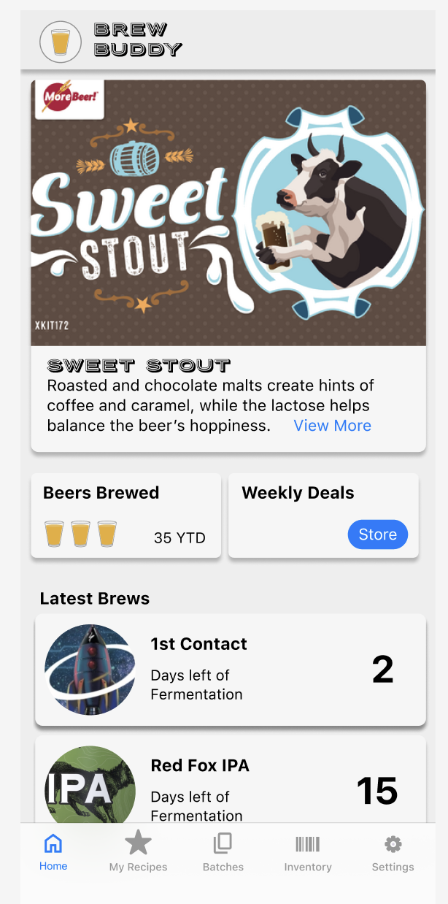
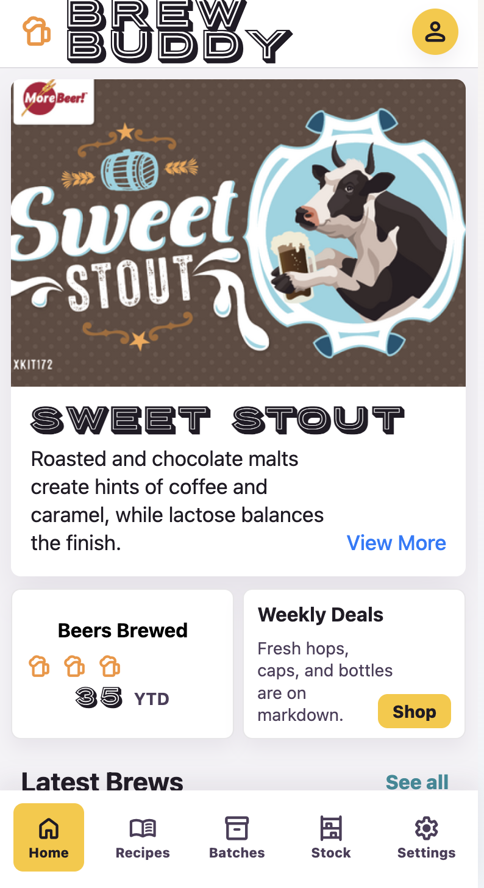
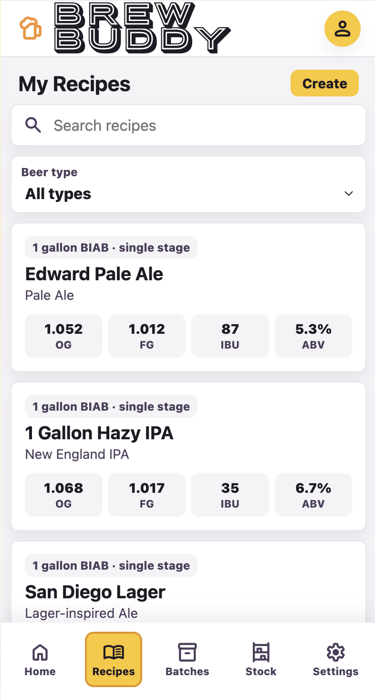
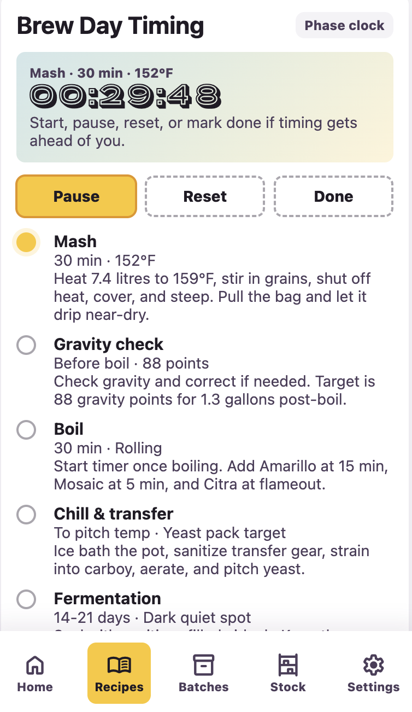
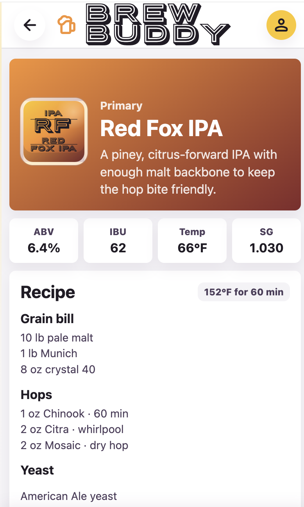
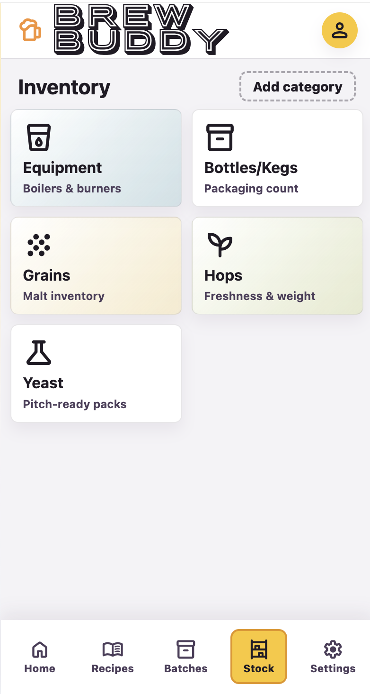
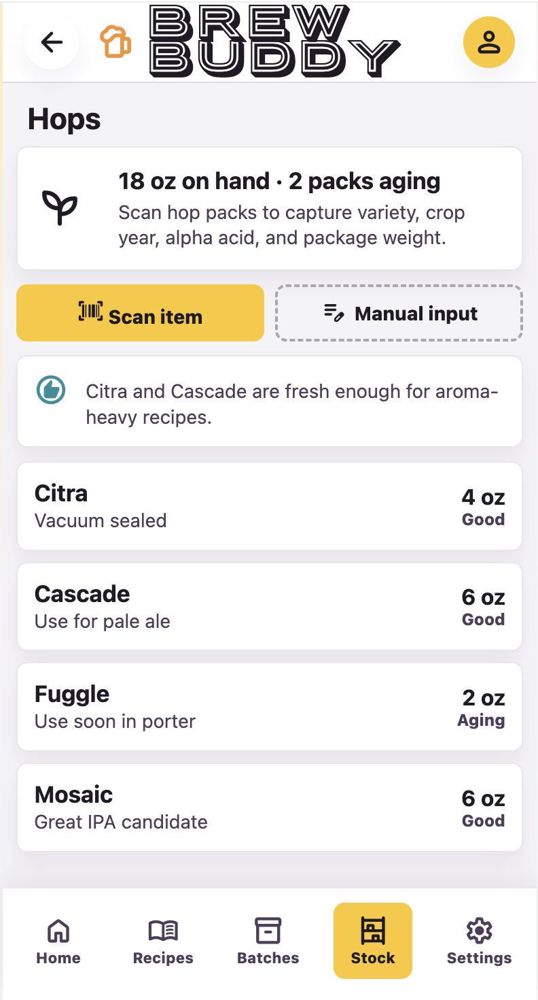
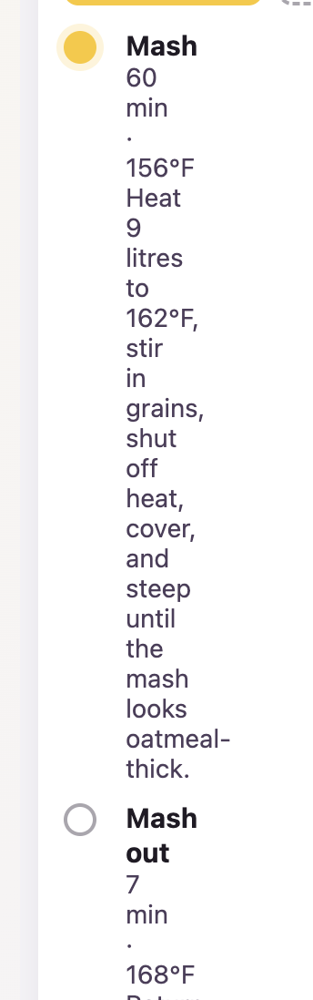

A Figma design system, the intended architecture, and a home dashboard screen were enough to establish the product language and build direction.
Side Project / Design Systems / AI-Assisted Product Build
Brew Buddy
A passion project showing how a well-made design system can compress the path from zero to working product.

From the first design-system inspection around 4:27 PM to final-ish polish around 7:32 PM, the app moved from reference material to a working product flow.
The work was captured as small checkpoints, including the prototype, data fixes, artwork, font assets, circular labels, and recipe timer controls.
The Experiment
Brew Buddy started as a personal product idea: a small-batch homebrewing companion for tracking active brews, browsing recipes, scaling ingredients, managing brew-day steps, and keeping pantry stock visible.
The point of the case study is not just the app. The point is the production model. I wanted to see how much product could be created when the AI implementation process was not starting from vague taste, but from a clear design system, a target architecture, and one representative dashboard screen.
What I Provided
The initial prompt gave the build just enough structure to move fast without flattening the product into a generic mobile UI.
- A Figma design system for visual foundations, components, spacing, and tone.
- An intended architecture for how the app should be organized.
- A home dashboard screen that established the product's first real interface pattern.
That combination mattered. The design system supplied the visual grammar, the architecture supplied product logic, and the dashboard supplied an example of how the system should behave in context.


What Got Built
The first committed prototype became a working mobile app shell with Home, Recipes, Batches, Inventory, and Settings. From there, the build expanded through quick, testable increments instead of one large handoff.
- Recipe library with detailed one-gallon beer recipes, profiles, ingredient lists, mash steps, boil schedules, fermentation notes, and bottling flows.
- Batch-size scaling so recipe ingredients could redraw from a one-gallon default to larger whole-gallon batches.
- Mobile-native batch-size selection, moving from a web dropdown to a bottom sheet with larger tap targets.
- Header navigation logic that kept top-level tabs clean and only showed back affordances on drill-in recipe screens.
- Active brew cards, featured brew artwork, circular latest-brew labels, Porter Sans branding, and playful beer-label visuals.
- A recipe phase timer with start, pause, reset, and done states for brew-day control.
Product Screens
By the final polish window, the prototype had enough surface area to feel like a real product: a branded home dashboard, recipe browsing, brew-day timing, active batch detail, and stock management.






The Pace
The chat log shows a realistic rapid-build window: the first Brew Buddy design-system message appears around 4:27 PM, the user direction to inspect the pages and components followed shortly after, and final-ish polish was happening around 7:32 PM.
In roughly three hours, the product moved from design-system review to a working mobile prototype with recipes, batch scaling, bottom-sheet interaction, mobile testing, Git checkpoints, brand polish, label artwork, and a brew-day timer. The late-stage polish still moved in minutes: the featured brew card update took about 1 minute 45 seconds, the Porter Sans wordmark update took under a minute, the circular latest-brews artwork took just under two minutes, and the final recipe phase timer took about 5 minutes 57 seconds from request to committed change.
That pace came from reducing ambiguity. The implementation could reuse the same product shell, data model, visual language, and interaction patterns instead of redesigning each screen from scratch.
Design system
Architecture
Dashboard
Prototype
Mobile testing
Brand polish
Timer controls
Testing Shaped the Product
The design system accelerated the build, but the product still improved through hands-on testing. A recipe-size selector first shipped as a freeform input, then changed to a whole-gallon dropdown, then became a bottom sheet because that pattern felt more appropriate for iOS and Android.
Device testing also exposed a real interaction bug: the recipe detail screen and recipe card handler were using the same data attribute, so taps inside the detail view were being interpreted as recipe-card selections. Renaming the internal state unblocked the picker and made the prototype usable on a phone over the local Wi-Fi server.

Why the System Worked
The design system did more than make the app look consistent. It created a shared contract between product intent and implementation.
- Visual decisions were already constrained, so iteration focused on behavior and product usefulness.
- Components had enough definition to support new screens without inventing a new style each time.
- The architecture gave the AI a map for where features belonged and how navigation should behave.
- The dashboard acted as a north star for tone: practical, warm, mobile-first, and specific to brewing.
The Takeaway
Brew Buddy shows the difference between asking AI to make an app and giving AI a product system to build from.
With a strong design system, a clear architecture, and one screen that demonstrates the intended experience, the work moved from concept to a functional, testable product surface in a very short cycle. The result was not just faster output. It was faster alignment: fewer arbitrary design choices, smaller implementation loops, and more time spent improving the actual brewing experience.
Final Artifact Package
The case study will close with the product itself, not just screenshots. The final artifact package is planned to include a link to the working Brew Buddy app and a localized downloadable version so the prototype can be opened, tested, and shared as part of the story.
That matters because the output is not only a design exploration. It becomes a tangible product artifact: design system, implementation, screenshots, live prototype, and local build moving together.